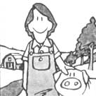
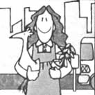
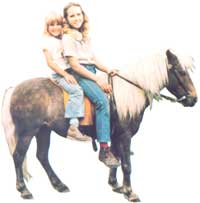
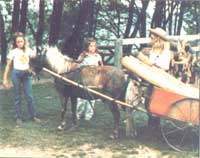

A PONY FOR WORK AND PLEASURE
MOTHER feels strongly that youths can be creative "doers", working toward more ecological and self-reliant lifestyles . . . whether their tasks be raising chickens on a farm or maintaining rooftop container gardens in the city. To support the endeavors of our often overlooked "underage" citizens, we're glad to publish well-written articles from younger children and teenagers concerning projects they've undertaken. However, we recommend that all young authors query (that is, send us a letter telling about the story you'd like to do) before writing a full article. Address inquiries to Mother's Children, THE Mother Earth News (restricted) , P.O. Box 70, Hendersonville, North Carolina 28791.
Britton Barker
My great-grandfather, Doss Britton, raises Tennessee Walkers in Missouri. He's about 90 years old, and he's been working with horses for over 70 years. I've heard lots of stories about his riding adventures (like the time he came home "froze to the saddle"). . . and other tales, too. I've even been told that he once stood at Frank James's knee and watched the famous outlaw play poker!
Well, I'm only 12 years old, but-like my great-grandfather -I've been interested in horses as long as I can remember. And for the past five years I've owned a Shetland-Hackney pony named Trigger.
My sister, my brothers, my friends, and I have all had great fun with Trigger. Sometimes one or two of us will travel the nearby roads in a one-horse carriage called a sulky. It's a wonderful way to see, hear, and smell the countryside! In the winter we ride all over the snowy hills in a little sleigh my pony pulls. And Trigger and I like to practice at a miniature horse jump I set up.
But Trigger also works. In fact, my family has found that the pony can be a very useful animal to have around a farmstead. Hitched up to a wagon, for instance, he hauls mulch hay and manure from the barn to the garden. When I need to make a phone call, I ride Trigger to the phone booth a half-mile away (we don't have a telephone at home). My mother often sends me on errands, too, and my pony really speeds up those trips for me. And in the autumn, some other children and I pick cider and applesauce apples from neighboring farmers' trees. We then load the fruit in a cart, and the pony hauls it home. Why, Trigger even has a job at a summer camp . . . taking small children for rides!
Of course, some chores aren't easy for Trigger. He has a hard time hauling firewood up the big hill from our hollow. Once he got a load so stuck in mud on his way up that he could not move! We had to unhitch the pony, lead him home, and then pull the wagon out with a tractor!
HOW YOU MIGHT START OUT
If you want to keep a pony yourself, your first job will be selecting an animal to buy. There're lots of different kinds to choose from. Certain types-such as the Shetland, Welsh Mountain, Haflinger, and Connemara-make good work animals. Others-like the Hackney, Pony of the Americas, and Dartmoor-are better for pleasure uses. Short ones (the Shet-lands, for example, stand only ten hands, or 40 inches, high) are good for small children, while bigger animals (like the Welsh Mountain and Hackney) are suitable for larger kids.
Whatever kind of pony you decide to get, you might want to look for one that's had some "horse sense" bred into it ... since it's well known that purebred ponies can be given to biting, kicking, and bucking, while most horses have milder temperaments and are easier to handle. We recently got a half-pony/half-horse named Sunny, and she's very friendly.
When you head out to buy your animal, be sure to take an expert with you. He or she should be able to tell, among other things, if the pony has any health problems . . . such as thrush or founder. Ask the animal's owner whether the pony kicks or bites. Walk right up to it and see whether it stays calm or starts acting jumpy, then ride it around some to find out if it's a "one-man animal" that doesn't like anyone new. (Have the owner ride it, too, so you can check its paces.) And ask if the pony is safe to ride near traffic.
YEAR-ROUND CARE
Your new pony will need a lot of care. For one thing, it should get regular exercise. An hour's daily workout that includes running through all the paces and commands it knows should be good enough. (If you keep your pony in a pasture, it won't need a workout every day.)
The animal should also be groomed daily, and after every workout, too! You'll need the following basic grooming equipment:
[1] a dandy brush or curry comb (to remove dried sweat or caked mud)
[2] a body brush (for grooming the whole body and getting rid of loose hairs)
[3] a water brush (hook this up to a hose and you can give your pony a bath)
[4] a sponge or clean rag (to wipe around the eyes, nose, mouth, and ears)
[5] a hoof pick (to pick mud and manure out of its hoofs)
[6] a bot eraser (to remove bot eggs from your pony's coat).
You might also want to use a sweat scraper (for removing excess sweat after a workout), and a wisp (to help you give the pony's coat an extra shine).
One of your most important, but not so pleasant, caretaking chores will be cleaning out the stall. Your animal should always have a clean home, with dry sawdust or straw for bedding. Wet, muddy stalls often lead to thrush, a hoof disease that can cause lameness if it's not treated.
HOUSING AND FEED
A pony needs at least two acres of pasture for spring, summer, and autumn grazing. You can fence it in with a good board enclosure, but don't use barbed wire, or the animal may cut itself. It will also need a roomy box stall-about 10 by 12 feet-to live in ... especially during the winter.
If the pony is exercised only once or twice a week, it can maintain itself during the growing seasons on good grassy pasture alone. If it's doing light work, though, it should also have about one-half pound of grain and one-quarter to one-half pound of hay per day per 100 pounds of body weight . . . plus one pound of protein supplement (linseed meal, soybean meal, cottonseed meal, or alfalfa pellets). An animal that has a moderate workload should get double those grain and hay rations. And if it's doing heavy work, you ought to make the daily rations 1-1/4 to 1-1/2 pounds of grain and one pound of hay per 100 pounds of body weight (plus the pound of protein supplement, of course).
In the winter, or whenever pasture grass is down, your pony should be fed a high-quality horse grain (you can get it at a local feed mill-as I do-if you don't grow your own), a good mixed grass-and-timothy hay, and maybe a bit of protein supplement.
YOUR PONY'S HEALTH
Proper shelter, food, water, and care will do a lot to help maintain your pony's health. In addition, avoid quick changes of its feed, activity level, or body temperature . . . and heavy stress of any kind.
If your pony begins to get sick, it'll show at least one of these symptoms: loss of appetite . . . cough . . . runny nose . . . watery eyes . . . unusual behavior . . . loss of weight . . . lack of vigor . . . dull coat . . . abnormal bowel or kidney function . . . uneasiness . . . restlessness ... or a tendency to sweat while at rest. Whenever one (or more) of these symptoms appears and persists for a while, call a vet.
PHOTOS SUPPLIED BY THE AUTHOR
STRAINING THE FOAL
It would take a thick book to tell you all about a young pony's education, so I'll just give you a few general tips and tell you some of my experiences with training Sunny, our yearling filly.
A pony can be taught to handle almost any chore a horse can do. The most important rule for you to remember, though, is this: Be patient. Never get angry at your pony. Don't push it into anything it's not ready to do. Wait until the animal's four or five years old before using it for any hard jobs. And when starting on its work training, or using it for labor after a long layoff, be sure to ease the pony into shape gradually.
The Barkers have discovered that a farmstead pony is not only a good friend and fun to have around, but also a big help with the chores.
I once forgot to follow that last rule myself. This past spring, after Trigger had been in the barn all winter, I got him out to pull a very heavy load of manure up a hill. Because the pony hadn't done such hard work for a long time, he sprained a muscle in his leg and became lame. It took about three months, and a lot of aspirin tablets, to get Trigger healed!
Our second pony, Sunny, was ten months old and already trained to walk on a short lead when we got her. I tried to teach her to walk on a long line, but she never seemed to get the hang of it, so I let that idea drop. Instead, I spent about three months grooming her every day, walking her on the short lead, and getting to know her better.
Even so, when I finally tried to mount that pony for the first time, I expected the worst of it ... but Sunny was happy to walk around calmly. I really had gained her confidence. I then spent a month teaching her the basic commands: whoa (stop), get-up (go), walk, trot, canter, gallop, reverse, gee (go right), haw (go left), and back up. Now, she's great fun to ride in the pastures, and is used to seeing and going over strange objects such as bright towels and plastic bags. But she's not traffic-safe yet. That'll be my next teaching job!
COSTS AND REWARDS
There are many expenses involved in owning a pony . . . including the cost of buying the animal, its feed, and riding gear. You'll also have to spend many hours caring for it. But you'll get a lot back from your pony, too. It can work hard for you around the farmstead, and that'll make up for all the time you spend caring for it. And you can even make money by doing things like selling colts or giving rides. A little ingenuity and persistence on your part can make sure that a new pony becomes a very worthwhile addition to your family's life.
EDITOR'S NOTE: Anyone who's thinking about buying a pony or horse for the first time may want to read the fine article "What to Consider Before Buying a Horse" in the October 1981 issue of Better Homes and Gardens.
|
 |
 |
 |
|
 |
|
|